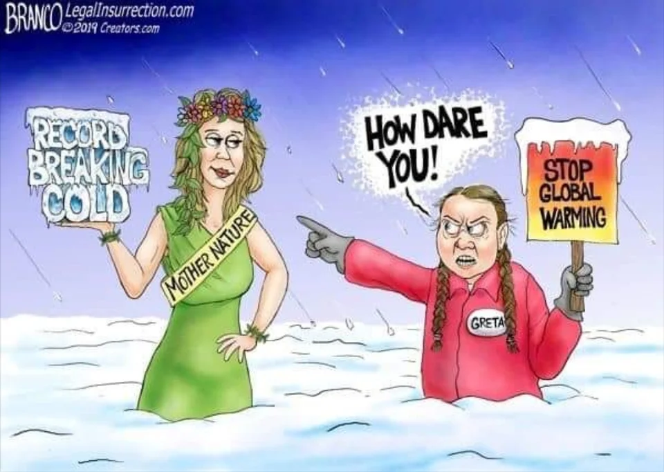

Weather is not climate.
February 18, 2022

This is weather.
This is climate.
Courtesy NASA's Scientific Visualization Studio
I often see people get these two meteorological terms mixed up, it’s a bit of a pet peeve of mine, and I’m making this post to clear up some confusion.
Climate change is a phenomenon caused by a rapid increase in average global temperature caused by excess anthropogenic “greenhouse gasses” entering the atmosphere. Climate scientists are in strong consensus over the existence of human-caused climate change, and have warned of the disastrous effects of it which need to be addressed immediately, which could cause crises such as the collapse of ecosystems, species extinction, the shutdown of the thermohaline circulation, which would lead to more drastic changes in climate, other climate system tipping points, food and clean water issues, and a complete change in society. In no way am I denying the negative effects of climate change.
However, I often see people on social media deciding specific weather events as being “caused by” or evidence of the existence/non-existence of climate change. This just makes little sense, because:
Weather is not climate.
The uninformed social media user generally does not have the knowledge to connect weather to climate. They do not statistically analyze the weather with past events to come to their conclusion, they see anomalous weather events and attribute it to climate change. At the end of the day, the day-to-day weather at the moment is not heavily influenced by climate. A major hurricane hitting a major city is not evidence of climate change, a wildfire ripping through a wooded town in California is not evidence of climate change, and a heatwave in the US is not evidence of climate change.
This may seem like a silly gripe to have with social media, but I believe this behavior is actively harming climate change awareness.
Take for example the pseudo-scientific climate change denial movement. When they see low temperatures and record breaking cold and use that to justify their beliefs, we laugh at them for not understanding that weather is not climate. However, some of the same people will turn around and claim the exact opposite, that high temperatures and record breaking warmth is evidence of climate change. Both arguments are pointless oversimplification of the issues that dilute the actual effects of anthropogenic actions on the environment. Despite the existance of this field, the average person is not an attribution scientist and does not have the qualifications to connect weather events to climate.
Laughably bad climate change denial meme.
“It was cold outside today” does not prove climate change wrong.
“It was hot outside today” does not prove climate change right.
We do not stoop to the level of pseudo-science in science. Science is better than this.
Even though weather and climate are not the same, there exists a field to connect the two called “attribution science” which seeks to attribute extreme weather events to climate change. They generally use climate models to compare an event occurring in an unwarmed world versus. In my opinion the link between weather and climate is somewhat tenuous, and there are certainly limitations to the field, but they have been able to attribute the 2021 Northwestern US heatwave to being more intense due to climate change.
Final note
A memo to those who classify the current conditions as a "climate emergency": The current warming of the planet is at about 1°C above the pre-industrial average. With current climate policies the temperature is expected to reach 2.8-3.2°C. If you believe the current state of weather, with a slightly higher likelihood of hurricanes, heatwaves, and droughts, is bad, just wait a few decades, and then maybe you’ll realize what an actual climate emergency is like.